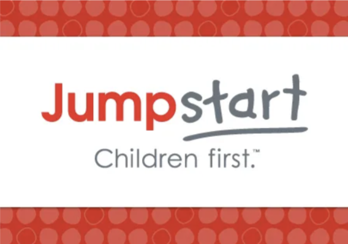
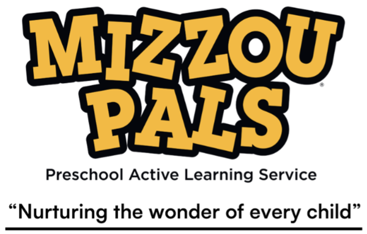
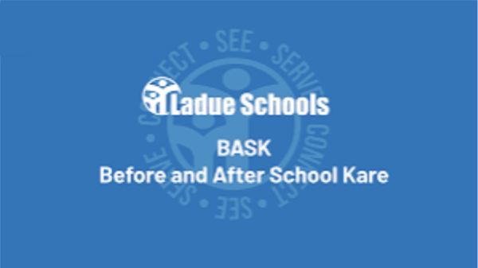
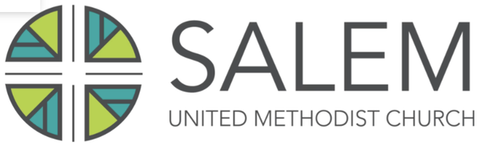

Career Experience
Jumpstart Corps Member
Description: As a Jumpstart Corps Member, I completed 300 hours of professional development and training in leadership, family communication, language and literacy development, and early childhood theory and practice.
Accomplishments:
- Applied evidence-based practices in real classroom settings
- Completed 300+ hours of specialized training in early childhood development
Reflection: This role gave me my first real foundation in understanding how children learn and develop. Working with early childhood theory taught me patience and how important clear communication is, especially with people who don’t have the same background or knowledge as you. That’s actually a big part of why I think I’ll do well in IT, since explaining tech stuff to non-technical people takes the same kind of patience.

Mizzou Pals Tutor
Description: I provide five hours of weekly one-on-one tutoring to preschool students, implementing an early childhood curriculum to promote social skills and linguistic proficiency.
Accomplishments:
- Delivered consistent, individualized tutoring support over multiple semesters
- Collaborated with teachers and parents to design engaging lesson plans and track student progress
Reflection: Tutoring one-on-one taught me how to adapt my approach based on the individual in front of me, since no two students learn the same way. That mindset has stuck with me as I move toward IT, where troubleshooting and support work often require the same kind of patience and adaptability. This role also strengthened my collaboration skills, working alongside teachers and parents toward a shared goal.

Before and After School Care Assistant
Description: I supervised kindergarten through fourth grade students in an after-school program, facilitating structured activities like outdoor games and board games to encourage physical activity and cognitive development.
Accomplishments:
- Maintained a safe, supportive environment for a wide age range of students
- Built strong rapport with students through consistent, meaningful engagement
Reflection: This job taught me how to manage a group dynamic and keep multiple students engaged at once, which is a skill I don’t think I fully appreciated until I started thinking about IT roles that involve training or supporting groups of people. It also reinforced how much I enjoy working with kids, which is part of why I’m drawn to school-based technology positions rather than leaving education behind entirely.

Vacation Bible School Volunteer
Description: I direct groups of 5-7 children through daily station activities during VBS, coordinating safe transportation between stations and maintaining a smooth daily routine.
Accomplishments:
- Volunteered consistently for nearly a decade, showing long-term commitment
- Served as a positive role model, reinforcing respectful behavior in children
Reflection: Volunteering with VBS for so many years has shown me how much I value consistency and community, even outside of paid work. Leading groups of children through structured activities year after year has strengthened my organizational skills and reinforced that mentorship and guidance are things I want to carry into whatever career path I take, technical or otherwise.
